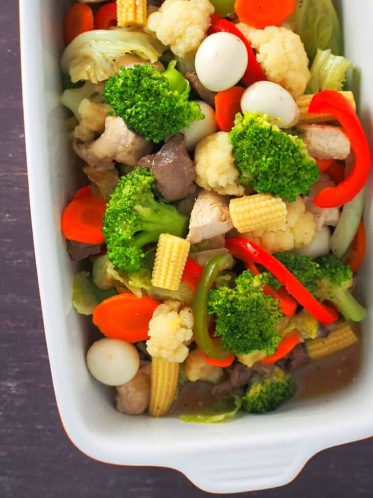

Chopsuey Recipe

Chopsuey
Chop Suey is a quick and easy stir-fry perfect for busy weeknights. With chicken, quail eggs, tender-crisp vegetables, and flavorful sauce, it’s nutritious as it is delicious!
Ingredients
- 1 large carrot, peeled and sliced on a bias into 1/4-inch thick
- 1/2 broccoli, cut into florets
- 1/2 cauliflower, cut into florets
- 1/2 cabbage, cut into 1-inch thick strips
- 1/2 red bell pepper, seeded and cut into strips
- 1/2 bell pepper, seeded and cut into strips
- 3 tablespoons canola oil
- 1/4 pound chicken liver, cut thin strips
- 1 onion, peeled and sliced
- 2 cloves garlic, peeled and minced
- 1/2 pound chicken thigh fillets, cut into thin strips
- 2 cups poaching liquid (reserved from parboiling the vegetables)
- 2 tablespoons oyster sauce
- 5 pieces baby corn, halved crosswise
- 6 hardboiled quail eggs, peeled
- 1/4 cup water
- 1 tablespoon corn starch
- salt and pepper to taste
Instructions
- Fill a bowl halfway with ice and enough water to cover ice. Add 1/2 teaspoon salt for each quart of water. Set aside.
- In a saucepan over medium heat, bring 3 cups of salted water to a boil. Add carrots and cook for about 1 minute or until half done. With a slotted spoon, remove from pan and plunge into bowl of ice bath.
- Add broccoli and cauliflower to the boiling water and cook for about 2 to 3 minutes or until half-done. With a slotted spoon, remove from pan and plunge into the ice bath.
- Add cabbage to the boiling water and cook for about 30 seconds or until half-done. With a slotted spoon, remove from pan and plunge into the ice bath.
- Add peppers to the boiling water and cook for about 30 seconds or until half-done. With a slotted spoon, remove from pan and plunge into the ice bath.
- Reserve 2 cups of the poaching liquid (the one used to blanch vegetables).
- Drain vegetables from the ice bath when they are cold.
- In a wok or wide skillet over medium heat, heat about 2 tablespoons of the oil.
- Add chicken liver in a single layer and fry until lightly browned on all sides but not fully cooked. Remove from pan and keep warm.
- Discard excess oil and wipe down the pan. Add the remaining 1 tablespoon of oil and heat.
- Add onions and garlic and cook until softened.
- Add chicken and cook, stirring regularly, until color changes.
- In a bowl, combine the reserved poaching liquid and oyster sauce. Add to the pan and bring to a boil. Continue to cook, skimming scum that may float on top, for about 4 to 5 minutes or until chicken is cooked through.
- Add the liver and cook for 1 to 2 minutes.
- Add parboiled vegetables, baby corn, and quail eggs, stirring gently to combine, and cook for about 3 to 5 minutes.
- In a bowl, combine 1/4 cup of cold water and corn starch and stir until corn starch is dissolved. Add mixture to the pan, stirring gently. Cook for about 1 to 2 minutes or until sauce is thickened.
- Season with salt and pepper to taste. Serve hot.